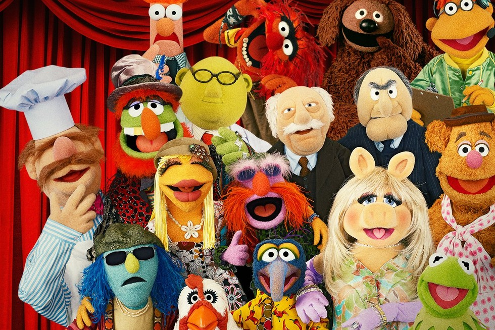

Read About Them!
Extra, extra, learn about a quarter of the Muppets gang!
Go row by row, I explain how each one looks and a little fun fact about them.
Cast

Top row, left to right
Beaker, the assitant to Dr. Bunsen Honeydew, is proned to getting into accidents. His big bulging eyes, red hair, and his frowny face says it all that he's a very nervous guy. He says mostly "mee-mee-mee".
Animal is a red monster with thick, bushy eyebrows and chains. He is a band member of The Electric Myahem and he plays the drums. He has a very deep, booming laugh and tends to say simple phrases. He also is known for his crazy outbursts.
Rowlf the Dog is a brown dog who tickles the keys, a gifted dog who loves playing piano. His humor is deadpan and is very chill.
Scooter has orange hair, glasses, and a green jacket. He's the backstage manager and a stage crew member.
Second row to the top, left to right
Dr. Teeth is the green-skinned fellow with red hair and large teethy grin. He's the lead signer and keyboardist of the Electric Myahem.
Waldorf is old heckler with thick grey eyebrows and black suit. He tends to heckle people with his friend, Statler.
Starler is also an old heckler with a grey mustache and brown suit. He loves to heckle people with Waldorf.
Fozzie Bear is a brown bear with a pink nose, brown bowler hat, and a white and pink polka dotted scarf. He's a stand up comedian who is known for his iconic laugh, wakka wakka!
Third row towards the bottom, left to right
Swedish Chef is known for his odd cooking skills and talks like a Swedish person if they spoke in gibberish. He is known to have real human hands. His phrase is "Bork, bork, bork".
Janice has blonde hair, big eyelashes, and big lips. She's a part of the Electric Mayhem band and she plays guitar and is a backup singer. She's very much a valley girl.
Floyd Pepper is the pink-skinned fellow with long orange hair and wears a green army hat. He's very much a hippie and very laid back. He is also a part of the Electric Mayhem band and plays the bass and sings back up.
Miss Piggy is the beauty queen of the Muppets. She tends to speak with French phrases, practices karate, and is a bit of a diva. She is in an on and off relationship with Kermit the Frog.
Bottom row, left to right
Zoot is the blue-skinned fellow that's balding and tends to wear dark sunglasses and a blue hat. He is a a part of the Electric Mayhem and he plays the saxophone.
Camilla the Chicken is a white chicken with blue eyelids, the other chickens have purple eyelids. She's Gonzo's girlfriend.
Gonzo is a blue creature with a long hooked nose. He is known for doing extreme stunts.
Kermit the Frog is the stage manager of the Muppets. He is the face of the Jim Henson Company. It's widely known that Kermit the Frog is the muppet that Jim Henson relates to, personality wise.